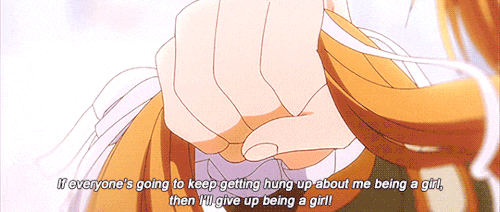
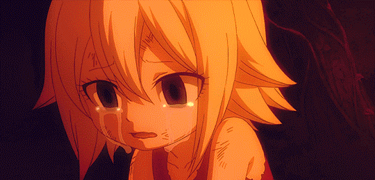
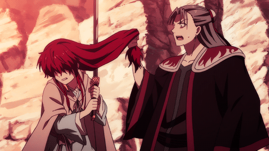

Arte (Arte)

Arte adalah perempuan yang berani keluar dari zona nyamannya, dan tidak pantang menyerah dalam meraih impiannya sebagai pelukis. Arte ini tangguh sekali.
Bagaimana tidak. Di zamannya Arte, semua orang berpikir bahwa melukis itu hanya untuk laki-laki. Sementara perempuan dianggap tidak mampu dan tidak berhak menjalani profesi tersebut.
Hebatnya Arte, walaupun ia sudah ditolak di sana-sini dan kerap diremehkan oleh banyak orang, dirinya tidak menyerah. Dia terus berjuang dan berjuang, sampai pada akhirnya bisa membuktikan bahwa dirinya mampu.
Arte adalah anime yang wajib ditonton sebagai motivasi bagi kita untuk menjadi perempuan berdaya.
Mavis Vermillion (Fairy Tail Zero)

Mavis adalah anak yatim piatu sejak usia yang sangat belia. Masih bocil, dia sudah bekerja keras demi melunasi semua hutang mendiang orangtuanya.
Sayangnya di usia sekecil itu Mavis sudah diperlakukan dengan kasar. Tapi dia tetap semangat, tetap sering belajar mandiri saat sedang tidak bekerja.
Mavis senang membaca, senang menimba ilmu. Dia percaya bahwa ilmu pengetahuan bisa membuatnya mampu bertahan hidup melawan kerasnya dunia.
Dan terbukti.
Tujuh tahun berlalu, Mavis menjadi gadis muda yang sangat pintar dan cerdik. Di usianya yang masih sangat muda, ia sudah mampu memimpin pasukan perang dan berhasil membawa banyak kemenangan untuk pasukannya.
Dan dia jugalah yang mendirikan Fairy Tail, guild yang ternyata sangat hebat dan kuat di masa depan.
Yona (Akatsuki no Yona)

Sejak kecil Yona terbiasa hidup sebagai putri kerajaan. Selama itu pula dia tidak pernah diperbolehkan melihat dunia luar. Dia menghabiskan seluruh masa kecilnya di istana.
Hingga saat sudah beranjak menjadi gadis remaja, Yona menyaksikan ayahnya, sang raja, dibunuh oleh sepupunya sendiri.
Demi menyelamatkan diri, Yona bersama Hak, pengawal sekaligus teman masa kecilnya, kabur dari istana dan mengembara sembari menghindari kejaran musuh.
Selama pengembaraan itu, Yona bisa saja memilih untuk tetap bersikap menjadi puteri kerajaan yang manja. Tapi Yona tidak melakukannya. Sebaliknya, dia bangkit dan bersikeras untuk mempelajari ilmu bertahan diri.
Jika kamu mengikuti anime maupun manga Akatsuki no Yona, kamu akan bisa meresapi fakta bahwa Yona termasuk satu dari sepuluh perempuan tangguh yang pernah ada di dunia anime.